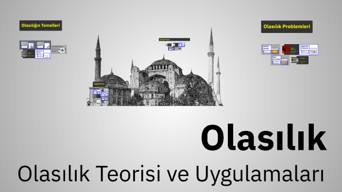
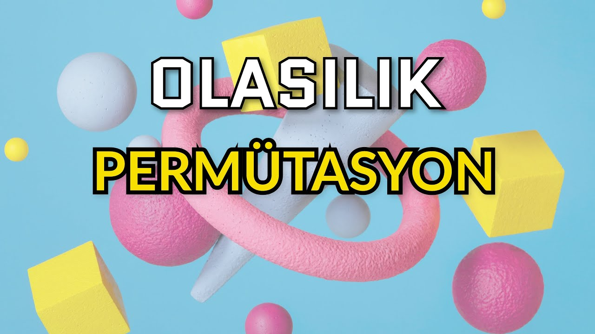
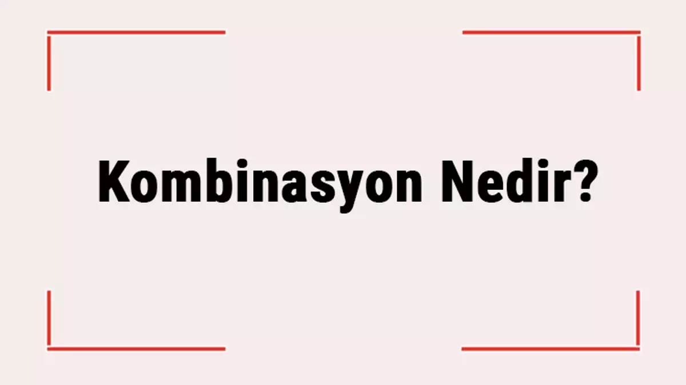
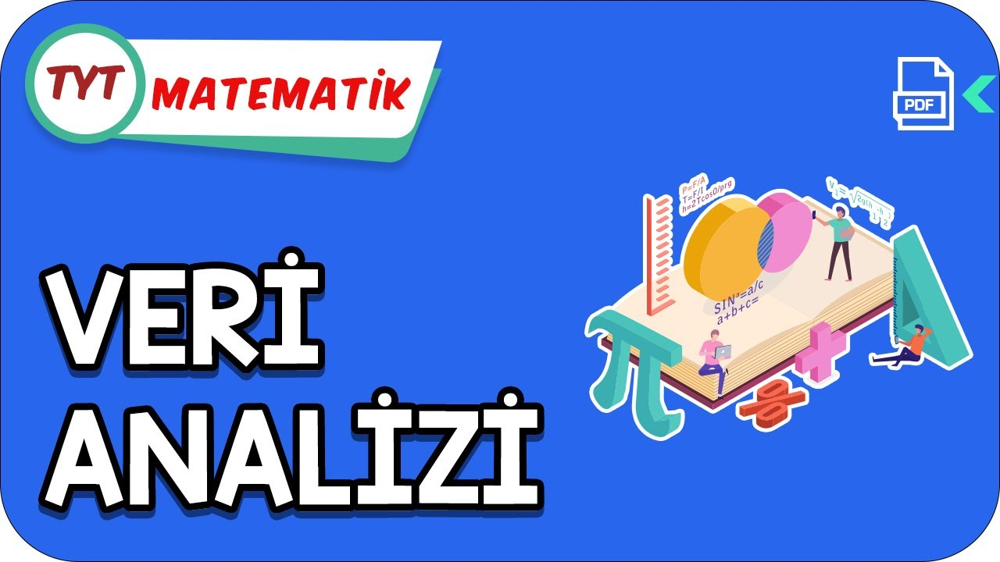

01. OLASILIK
Olasılık, belirsiz bir durumun sayısal beklentisidir. Gerçekleşmesi istenen spesifik koşulların, olabilecek tüm koşullara bölünmesiyle evrensel bir oran elde edilir.
P(A) = s(A) / s(E)
S(A): İstenen Durum Uzayı S(E): Evrensel Örnek Uzay

02. PERMÜTASYON
Elemanların kendi içindeki sıralanışıdır. Konum veya hiyerarşi söz konusu olduğunda sıra önemlidir. ABC dizilimi ile CBA dizilimi permütasyonda farklıdır.
Permütasyon: P(n, r) = n! / (n-r)!
Tekrarlı P: n! / (n1! * n2! * ... * nk!)
n: Toplam eleman sayısı r: Seçilen eleman sayısı
n1, n2, ... nk: Tekrarlayan elemanların adetleri

03. KOMBİNASYON
Elemanlar kümesi arasından yapılan alt küme seçimidir. Sadece elemanların varlığı dikkate alınır, kendi içlerindeki sıralama tamamen etkisizdir.
C(n, r) = n! / (r! * (n-r)!)
n: Toplam eleman sayısı r: Seçilen eleman sayısı

04. VERİ ANALİZİ
Ham sayısal verileri anlamlandırma, merkezi eğilim ve yayılım ölçülerini (ortalama, medyan, aritmetik ortalama...) tespit ederek veri setinin karakterini çıkarma sürecidir.
Hafif Tanımlar:
Mod: En çok tekrar eden değere denir. Aritmetik Ortalama: Tüm değerlerin toplamının, değer sayısına bölünmesine denir
Medyan: Sıralanmış veri setinin ortasında kalan değer (veya çift ise ortadaki iki değerin ortalaması) denir.
FORMÜL LABORATUVARI
VERİ ANALİZİ
OLASILIK MOTORU
(KLASİK TARZDA) SORU 1:
Bir madeni para 3 kez havaya atılıyor. En az iki kez tura gelme olasılığı kaçtır?
Adım 2: En az iki kez tura gelme durumları 4 tanedir. (TTT, TTY, TYT, YTT)
Sonuç: P(A) = 4 / 8 = 1 / 2'dir
(KLASİK TARZDA) SORU 2:
İki zar aynı anda atılıyor. Üst yüze gelen sayıların toplamının 8 olma olasılığı nedir?
Adım 2: Tüm olası durumlar 6 * 6 = 36 adettir.
Sonuç: P(A) = 5 / 36'dır.
(KLASİK TARZDA) SORU 3:
3 doktor ve 4 hemşire arasından 3 kişilik bir ekip seçilecektir. Ekipte en az bir doktor bulunma olasılığı nedir?
Adım 2: Ekipte en az bir doktor bulunması için, 0 doktor ve 3 hemşire, 1 doktor ve 2 hemşire, 2 doktor ve 1 hemşire, 3 doktor ve 0 hemşire durumları hesaplanır.
Sonuç: P(A) = 31 / 35'dir.
(KLASİK TARZDA) SORU 4:
4 evli çift arasından seçilen 2 kişinin birbirinin eşi olma olasılığı nedir?
Adım 2: Birbirinin eşi olan 2 kişi seçimi için, 4 evli çiftten 1 çift seçilir: C(4,1) = 4
Sonuç: P(A) = 4 / 28 = 1 / 7'dir.
(KLASİK TARZDA) SORU 5:
MATEMATİK kelimesinin harfleri yer değiştirilerek yazılan anlamlı veya anlamsız 9 harfli kelimelerden biri seçiliyor. Seçilen kelimenin M ile başlama olasılığı nedir?
Adım 2: M ile başlayan kelimelerin sayısı: 8! / (2! * 2!) = 8! / 4 = 1008
Sonuç: P(A) = 1008 / 8820 = 4 / 35'dir.
(ZOR SEVİYE) SORU 6:
Aynı düzlemde bulunan, 4'ü birbirine paralel olan d1 doğrusu üzerinde ve diğer 6'sı bir çember üzerinde olan toplam 10 farklı nokta verilmiştir. Bu noktalar kullanılarak köşeleri bu noktalar üzerinde olan en fazla kaç farklı üçgen çizilebilir?
Adım 2: Aynı doğru (d1) üzerinde bulunan 4 nokta kendi aralarında bir üçgen oluşturamaz. Çember üzerindeki noktalar zaten doğrusal değildir.
Adım 3: İstenmeyen durumu (doğrusal olan 4 noktanın üçlü kombinasyonlarını) toplamdan çıkarmalıyız. İstenmeyen = C(4, 3) = 4.
Sonuç: 120 - 4 = 116 farklı üçgen oluşturulabilir.
(ZOR SEVİYE) SORU 7:
1'den 10'a kadar numaralandırılmış 10 topun bulunduğu bir torbadan geri atılmaksızın art arda 3 top çekiliyor. Çekilen topların numaralarının, çekiliş sırasına göre küçükten büyüğe kesinlikle artan bir sırada olma olasılığı nedir?
Adım 2: Çekilen herhangi 3 farklı top kendi aralarında 3! = 6 farklı şekilde sıralanabilir. Fakat bu 6 dizilimden sadece 1 tanesi "küçükten büyüğe sıralı" olma şartını sağlar.
Adım 3: Küçükten büyüğe sıralı üçlülerin sayısı, 10 toptan 3 top seçme kombinasyonu kadardır. s(A) = C(10, 3) = 120.
Sonuç: P(A) = 120 / 720 = 1 / 6.
(ZOR SEVİYE) SORU 8:
3 evli çift yan yana rastgele diziliyor. Hiçbir evli çiftin yan yana gelmeme olasılığı kaçtır?
Adım 2: Evli çiftlerin yan yana gelme olasılıklarını hesaplamak için, her bir çifti tek bir birim gibi düşünerek hesaplanır.
Adım 3: Hiçbir evli çiftin yan yana gelmeme olasılığı, tüm durumlardan evli çiftlerin yan yana gelme olasılıklarının çıkarılmasıyla bulunur.
Adım 4: Tüm durum - Evli çiftlerin yan yana gelme olasılığı 6! - (3! * 3!) = 720 - 72 = 648
Adım 5: Geri kalan durumlar, hiçbir evli çiftin yan yana gelmeme olasılığını verir. O halde:
Sonuç: P(A) = 192 / 720 = 4 / 15'dir.
(ZOR SEVİYE) SORU 9:
A = {1, 2, 3} ve B = {1, 2, 3, 4, 5} kümeleri veriliyor. A'dan B'ye tanımlanabilen tüm fonksiyonlar arasından rastgele seçilen bir fonksiyonun, artan bir fonksiyon (x1 < x2 ise f(x1) < f(x2)) olma olasılığı kaçtır?
Adım 2: Artan bir fonksiyon tanımlamak için B kümesinden tam 3 farklı eleman seçmemiz gerekir. Seçtiğimiz bu 3 eleman, doğal bir şekilde (küçükten büyüğe) A kümesinin elemanlarıyla otomatik olarak tek bir eşleşme yapar.
Adım 3: O halde artan fonksiyon sayısı B'den seçilecek 3 eleman kombinasyonudur. s(A) = C(5, 3) = 10.
Sonuç: P(A) = 10 / 125 = 2 / 25.
(ZOR SEVİYE) SORU 10:
Rastgele seçilen bir iki basamaklı doğal sayının tam kare olduğu bilindiğine göre, bu sayının rakamları toplamının da tam kare olma olasılığı kaçtır?
Adım 2: Rakamları toplamı da tam kare olan sayılar: 16 (1+6=7, 7 değil), 25 (2+5=7, 7 değil), 36 (3+6=9, 9 tam kare), 49 (4+9=13, 13 değil), 64 (6+4=10, 10 değil), 81 (8+1=9, 9 tam kare).
Adım 3: Bu durumda istenen olasılık: 2 / 6 = 1 / 3'dür.